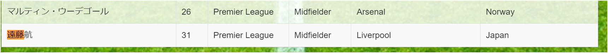
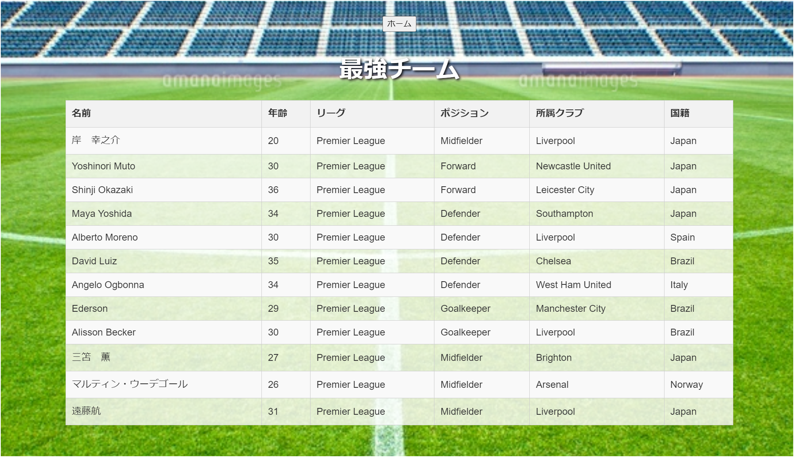

DBP最終レポート
22FI041 岸 幸之介
概要
使用言語：HTML、CSS、Javascript、Java（JSP）、Postgres
説明：海外サッカーの有名なプレミアリーグという強いクラブチームが集まるリーグがあります。その選手（計550名程度）です。これらの選手情報をもとに自身で選手を更新したり、削除、検索、自身でオリジナルのチームの作成（ドラックアンドドロップ機能付き）を実現しました。 データが少ないためコーディングに大量の時間を割きましたため、高評価お願いします！！(o*。_。)oペコッ
主な機能
- 選手の追加機能、削除機能、選手一覧
- 選手検索機能（絞り込み）
- オリジナルチーム制作→自身の好きな選手を20人まで選べる（ベンチメンバー含め）
- ドラックアンドドロップで自身の好きなメンバーを11人配置できる
設計方針
★主にJSPを使用し、Tomcat10_Java17で起動しブラウザで表示させました。（周りの友人皆GUIだったので）localhost:8080/JavaWebdb/○○➀データベースを2つ作成
１：プレミアリーグの選手一覧→players
２：オリジナルチーム用→club_players
データベース

➁今回は、サッカー選手のCSVを配布している https://footystats.org/jp/download-stats-csv →このサイトのCSVを取得し、PythonでCSVをPostgresに挿入
PythonでCSVの挿入

➂データベースをブラウザで表示
➃ホーム画面の作成
➄その他のJSP,HTMLファイル
プログラムの説明
➀プルダウン機能の追加
- Class.forName(driverClassName);でJDBCドライバーをロードし、DriverManager.getConnection(url, user, password);でPostgreSQLデータベースに接続。
- connection.createStatement();でステートメントオブジェクトを作成し、statement.executeQuery(query);でSQLクエリを実行して結果セットを取得。
- クエリ結果セットからクラブチーム名を取得し、optionタグとしてプルダウンメニューに追加します。この部分が動的に選択肢を生成するためのポイントです！
- while (resultSet.next())ループ内で、各クラブチーム名を取り出し、HTMLのoptionタグとして出力します。
選手を絞り込みで検索する際に、クラブチームと国籍をプルダウンで簡単に選択するようにした
<label for="search_club">クラブチーム名:</label>
<select id="search_club" name="search_club">
<option value="">-- クラブチームを選択 --</option>
<%
String driverClassName =
"org.postgresql.Driver";
String url =
"jdbc:postgresql://localhost/soccer";
String user = "postgres";
String password = "○○";
Connection connection = null;
Statement statement = null;
ResultSet resultSet = null;
try {
Class.forName(driverClassName);
ここ！！！
connection =
DriverManager.getConnection(url, user, password);
ここ！！
statement =
connection.createStatement();
String query = "SELECT
DISTINCT current_club FROM players ORDER BY current_club";
resultSet =
statement.executeQuery(query);
ここ！！ while
(resultSet.next()) {
String
club = resultSet.getString("current_club");
%>
<option value="<%= club %>"><%=
club %></option>
<%
}
} catch (Exception e) {
e.printStackTrace();
} finally {
try {
if
(resultSet != null) resultSet.close();
if
(statement != null) statement.close();
if
(connection != null) connection.close();
} catch (Exception e)
{
e.printStackTrace();
}
}
%>
</select>
➁アニメーションの追加
- CSSアニメーションを使用して背景画像を動かしました。
- この効果により、ユーザーがページを訪れた際に視覚的な楽しさを提供します。
- CSSのkeyframesを使い、画像の位置を変化させています。
body {
background-image: url('background.jpg');
background-size: cover;
animation: moveBackground 10s linear
infinite;
}
@keyframes moveBackground {
0% { background-position: 0 0; }
100% { background-position: 100% 0; }
}
➃ドラック&ドロップの実装
選手リストの各行に draggable="true" を設定し、選手名をドラッグ可能に。ondragstart="drag(event)" により、ドラッグイベントが開始された際に選手名を取得
ポジション指定のドロップゾーン
各ポジションに対してドロップゾーンを設定し、選手名をドロップ可能に。ondrop="drop(event)" と ondragover="allowDrop(event)" により、ドロップイベントを許可し、選手名を表示
実行結果
➀ホーム画面
➁選手を追加ボタン
登録できた時の画面
一覧表示で選手情報
遠藤航が追加されていることを確認
➂選手を放出ボタン
プルダウン機能の実装
➃選手一覧ボタン
➄選手検索ボタン
ポジションがゴールキーパーのみで出力してくれる
➅オリジナルチーム作成ボタン
ここで特定の選手を検索
例として、遠藤航を選択して追加
最強チームに追加されていることを確認
選手がすでに登録済の場合、このように表示する
➆選手をドラック&ドロップで実際にポジションを指定してみよう（ドラック前）
ドラック&ドロップ後